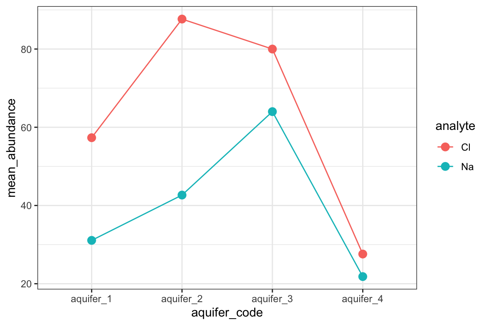

analysis of variance
How much of the variation does each factor explain? Designed experiments rarely vary one thing at a time: a field trial crosses fertilizers with crop varieties, a metabolomics study crosses treatments with genotypes, and samples are run in batches on different days. Analysis of variance splits the variation in a set of measurements into a part explained by each factor and a part left over, then asks whether each factor explains more than chance would, how large its effect is, and whether two factors simply add up or depend on each other. This chapter treats ANOVA as a question asked of a fitted linear model: one factor, its rank-based counterpart, two factors and their interaction, reading the ANOVA table, and checking the model.
One-page summary (PDF) Jump to the chapter summary

Choosing an analysis of variance. This decision flowchart starts from the number of factors in the experiment and ends at the function to run and the row of the table to read first. Yellow boxes are questions about the design and the data and green boxes are recommended steps.
ANOVA is a linear model
The comparing groups chapter asked whether groups differ, and which pairs. ANOVA asks a broader question: of all the variation in a set of measurements, how much is explained by each factor in the experiment, and how do those factors combine?
The central idea of ANOVA is that the variation in a set of measurements can be split into parts. Some of the variation lies between groups: the group averages differ from the overall average. The rest lies within groups: individual measurements scatter around their own group’s average. If the groups truly do not differ, the between-group part should be about the size expected from the within-group scatter alone. The F statistic is the ratio of the two, each divided by its degrees of freedom (explained below), and a large F means the groups differ by more than chance would allow.
This is the same machinery as the regression chapter. An ANOVA is a linear model whose predictors are categories rather than numbers (a categorical predictor in an ANOVA is usually called a factor). The formula is written the same way: the response on the left of the ~, the predictors on the right. That connection is what lets ANOVA grow beyond a single factor: anything a linear model can include (a second factor, an interaction, a numeric predictor) can appear in an ANOVA too. It also means the work can be organized the same way throughout this chapter: build the model once with buildModel() and a formula, as in the regression chapter’s section on comparing slopes between groups, then ask that one model questions with anovaTest() and, for a single factor, gamesHowellTest().
concept check
Self-check: an ANOVA on potassium in ten aquifers gives a large F. What does that say?
one factor
Using the potassium data from the comparing groups chapter, we build a model of abundance by aquifer, and a one-way ANOVA on it asks whether the aquifers differ at all:
K_model <- buildModel(
data = K_data,
model_type = "linear_regression",
formula = abundance ~ aquifer_code
)
K_model %>%
anovaTest()
## ANOVA Table (type II tests)
##
## Effect DFn DFd F p p<.05 ges
## 1 aquifer_code 9 96 9.486 3.28e-10 * 0.471A pretty small p-value! Under the null hypothesis that all aquifers have the same mean, observing differences at least this extreme would be very unlikely, so we have evidence that at least one mean differs. The ANOVA does not say which aquifers differ. That is the job of the Games-Howell test from the comparing groups chapter, which accepts the same model and returns the same letters as gamesHowellTest(abundance ~ aquifer_code) on the data:
K_model %>%
gamesHowellTest() %>%
pGroups()
## treatment group spaced_group estimate
## aquifer_1 aquifer_1 abcde abcde 2.325000
## aquifer_10 aquifer_10 abcdef abcdef 2.328571
## aquifer_2 aquifer_2 af a f 3.766667
## aquifer_3 aquifer_3 bd b d 2.700000
## aquifer_4 aquifer_4 c c 1.170588
## aquifer_5 aquifer_5 ce c e 1.450000
## aquifer_6 aquifer_6 abf ab f 4.308333
## aquifer_7 aquifer_7 f f 5.022222
## aquifer_8 aquifer_8 abcde abcde 2.200000
## aquifer_9 aquifer_9 de de 1.975758
## std_err
## aquifer_1 0.43469338
## aquifer_10 0.76180059
## aquifer_2 0.10219806
## aquifer_3 0.15275252
## aquifer_4 0.06228770
## aquifer_5 0.06454972
## aquifer_6 0.57412098
## aquifer_7 0.52566830
## aquifer_8 0.25166115
## aquifer_9 0.22717927Each aquifer gets its letters, its mean (estimate) and the standard error of that mean (std_err). The standard errors differ a great deal from aquifer to aquifer, because the Games-Howell test uses each group’s own spread rather than the model’s pooled residual, the single estimate of the leftover scatter that the ANOVA uses. Aquifers 4 and 5, whose wells agree closely, have small standard errors and are told apart from several others, while aquifer 10, whose seven wells scatter widely, shares a letter with every other aquifer.
What the ANOVA adds is a single answer to “is there any difference at all?” and a measure of how big the effect is. The ANOVA and the Games-Howell test can disagree. An ANOVA can be significant while no single pair is, for example when two groups together sit above a third but neither does on its own, and a Games-Howell test can occasionally flag a pair when the overall ANOVA is not significant. They are answering different questions.
reading the ANOVA table
Each row of an ANOVA table is one term in the model, and its columns say how much of the variation that term explains and whether that is more than chance would allow. A full ANOVA table also has a row for the residuals, the variation left over after every term has been fitted; anovaTest() does not print that row, but reports its degrees of freedom in every row as DFd.
Degrees of freedom work like a budget. Every measurement adds one unit to the budget, so the potassium data, with 106 measurements, have 106 units to spend. Every value the model estimates costs one unit, and each kind of term has a fixed price:
| Term in the model | Cost in degrees of freedom |
|---|---|
| the overall average | 1 (always part of the model, so it has no row of its own) |
| a factor with k groups | k − 1 (the overall average already accounts for one group) |
| a numeric predictor | 1 (one slope) |
| an interaction between two terms | the costs of the two terms multiplied together |
| the residuals | whatever is left over |
A term’s cost is its DFn, and what is left for the residuals is DFd. In the potassium model, the ten aquifers cost 9, the overall average costs 1, and the residuals get the remaining 106 − 10 = 96.
The budget matters because every value the model estimates lets it bend toward the data a little, so even a term with no real effect explains some variation by chance: on average, about as much per unit spent as the residuals hold per unit. F therefore divides each part by its cost before comparing them. Aquifer explains 150.4 units of squared variation (its sum of squares, which anovaTest() does not print) at a cost of 9, and the residuals hold 169.2 at a cost of 96, so F = (150.4 / 9) / (169.2 / 96) = 16.7 / 1.76 = 9.5. A term with no real effect gives an F near 1 whatever it costs, which is what lets terms of different cost be compared on the same scale. The size of the residual budget matters too: the more units left over, the better the estimate of the leftover scatter, and the more the F can be trusted.
Because F is a rate per unit spent, it is evidence that a term matters, not a measure of how much it matters: a factor with many groups can explain a great deal of variation and still have a modest F. The size of an effect is in the ges column (generalized eta squared), the share of the variation explained by the term once the other terms are set aside. Here, aquifer explains roughly 47% of the variation in potassium (150.4 out of 150.4 + 169.2).
the Kruskal test
The rank-based cousin of the ANOVA is the Kruskal test. It is the Wilcox test extended to more than two groups: it pools every value from every group, ranks them all together, and asks whether the groups’ average ranks differ by more than chance would allow. It behaves much like an ANOVA run on the ranks, which is why it does not need normally distributed data. It answers only the “any difference at all?” question for a single factor, and which groups differ is then a question for the Dunn test from the comparing groups chapter. Rank-based versions of the designs in the rest of this chapter do exist, but they are more specialized and are not covered here.
K_data %>%
kruskalTest(abundance ~ aquifer_code)
## # A tibble: 1 × 6
## .y. n statistic df p method
## * <chr> <int> <dbl> <int> <dbl> <chr>
## 1 abundance 106 55.9 9 0.00000000807 Kruskal-Wal…two factors and interactions
Many experiments vary more than one thing at once: a treatment and a genotype, a fertilizer and a soil type, an analyte and a site. A two-way ANOVA estimates the effect of each factor and asks whether the two interact, meaning whether the effect of one factor depends on the level of the other. As an example, consider sodium and chloride in four of the aquifers:
nacl <- hawaii_aquifers %>%
filter(analyte %in% c("Na", "Cl"),
aquifer_code %in% c("aquifer_1", "aquifer_2", "aquifer_3", "aquifer_4"))
nacl_model <- buildModel(
data = nacl,
model_type = "linear_regression",
formula = abundance ~ analyte * aquifer_code
)
nacl_model %>%
anovaTest()
## ANOVA Table (type II tests)
##
## Effect DFn DFd F p p<.05 ges
## 1 analyte 1 68 14.514 3.02e-04 * 0.176
## 2 aquifer_code 3 68 15.171 1.17e-07 * 0.401
## 3 analyte:aquifer_code 3 68 2.646 5.60e-02 0.105The * in the formula asks for both factors and their interaction. The output has one row for each, and the budget still balances: the 76 measurements pay 1 for the overall average, 1 for analyte (two levels), 3 for aquifer (four levels) and 1 × 3 = 3 for the interaction, which leaves 68 for the residuals. Analyte matters (chloride is more abundant than sodium overall), aquifer matters, and the interaction row asks whether the gap between chloride and sodium is the same in every aquifer. Here its p-value is 0.056, just above the usual threshold, so the evidence that the gap changes from aquifer to aquifer is suggestive but not conclusive. An interaction plot shows what the row is testing: one line per analyte across the aquifers. Parallel lines mean no interaction; lines that converge, diverge or cross mean the effect of one factor depends on the other.
nacl %>%
group_by(aquifer_code, analyte) %>%
summarize(mean_abundance = mean(abundance)) %>%
ggplot(aes(x = aquifer_code, y = mean_abundance, color = analyte, group = analyte)) +
geom_point(size = 3) +
geom_line() +
theme_bw()
Chloride and sodium in four Hawaiian aquifers. Interaction plot of mean abundance (y axis) for each aquifer (x axis), with one line and color per analyte; each point is the mean of all wells sampled in that aquifer. The gap between chloride and sodium is wide in aquifer 2 and narrow in aquifer 4, which is what the interaction term in the two-way ANOVA tests. Data are from the hawaii_aquifers dataset.
The interaction row is not “the two factors together”. It measures only the extra variation explained by letting the effect of one factor differ across the levels of the other, on top of a model that already has both factors. Most of the explaining is usually done by the factors themselves, so the interaction row is often the smallest, and that is expected. When an interaction is real, though, the main effects on their own can mislead: “the treatment raises yield” is not a useful summary if it raises yield in one soil and lowers it in another. Read the interaction row first.
other designs
The same model-then-table approach covers several designs that come up in laboratory work. They are named here so they can be recognized; each has its own literature.
-
Blocking. Samples run on different days, plates or instrument batches can shift by batch alone. A block is a factor that is not of interest but adds variation; including it, as in
response ~ treatment + batch, removes that variation from the residuals and makes the factor of interest easier to detect. -
Adjusting for a covariate (ANCOVA). When groups also differ in a numeric variable that affects the response, such as plant size, adding it to the formula,
response ~ treatment + plant_size, compares the groups at the same value of the covariate. With*instead of+, the model gives each group its own slope, which is the comparing-slopes analysis from the regression chapter. - Repeated measures. When the same subject is measured more than once (the same plant over several weeks, the same patient before and after a treatment), the measurements are not independent, and treating them as if they were overstates the evidence. These designs need a mixed model, which tracks which measurements belong to which subject.
- Many responses at once. MANOVA extends ANOVA to several responses measured on each sample but assumes they are jointly normal, which large chemical profiles rarely are. PERMANOVA works from a distance matrix, as built in the distances and scaling chapter, and gets its p-value by shuffling the group labels, so it is the usual choice for metabolomics and community profiles.
checking the model
An ANOVA makes the same assumptions as the linear models in the regression chapter: the residuals (each measurement’s distance from its group mean) should be roughly normal and have similar spread across groups, and the measurements should be independent. The check_model() habit from the regression chapter applies here unchanged:
check_model(K_model$model)
Diagnostic checks for the one-way ANOVA model of potassium by aquifer. Panels produced by check_model(): a posterior predictive check comparing the distribution of observed and model-predicted potassium; linearity and homogeneity of variance, each plotting residuals against fitted values (one vertical stripe per aquifer); influential observations, plotting standardized residuals against leverage; and normality of residuals as a quantile-quantile plot. Data are from the hawaii_aquifers dataset.
Unequal spreads matter most to the ANOVA’s F, which compares every term with one pooled estimate of the leftover scatter. The Games-Howell test used above to find which groups differ already judges each pair on its own two spreads, so it does not depend on this assumption. When the spreads clearly differ between groups, a Welch ANOVA is the unequal-variance counterpart of the ANOVA, and the rank-based Kruskal test is another way out for a single factor.
chapter summary
Download this summary as a one-page PDF
An ANOVA splits the variation in a response into the part each term explains and the part left over. Build the model, then ask it questions: fit it once with a formula (response on the left, factors on the right, * for an interaction), read the ANOVA table, then, for a single factor, use the Games-Howell test on the same model to find which groups differ. Read the table with the degrees-of-freedom budget in mind: each measurement adds one unit, a factor with k groups costs k − 1, an interaction costs the product of its terms’ costs, and the rest goes to the residuals. F is each term’s variation per unit spent over the residual variation per unit, so it is evidence that a term matters; ges is how much it matters. With two factors, read the interaction row first: if it is real, a main effect alone can mislead, and an interaction plot shows how. Check the model before trusting it: residuals roughly normal with similar spread, and measurements independent (repeated measurements of one subject need a mixed model). For a single factor with non-normal data, use the Kruskal test, then the Dunn test.
| Function | What it is for | How it is used in this chapter |
|---|---|---|
buildModel(formula = ) |
fitting the model the ANOVA is read from |
response ~ factor, or response ~ factor_1 * factor_2 for an interaction, with model_type = "linear_regression"
|
anovaTest() |
the ANOVA table: one row per term, with DFn, DFd, F, p and ges
|
piped after the model |
gamesHowellTest(), pGroups()
|
which groups differ, as letters, using each group’s own spread | piped after the same one-factor model |
kruskalTest(abundance ~ aquifer_code) |
rank-based test of any difference, one factor | on the data, followed by dunnTest()
|
check_model() |
diagnostic panels for the residuals | given model$model
|
further reading
Common statistical tests are linear models. Jonas Lindeløv shows that the t-test, one- and two-way ANOVA and ANCOVA are all the same linear model with different predictors, with R code side by side. It is the clearest account of the idea this chapter is built on.
Analysis of variance and blocking. Martin Krzywinski and Naomi Altman’s short Nature Methods column (2014) explains the between- and within-group split behind F, and how a blocking factor removes nuisance variation from the error term.
Two-way anova. John McDonald’s Handbook of Biological Statistics walks through two-way designs with and without replication, what an interaction test does, and why main effects can mislead when an interaction is present.
Interaction analysis in emmeans. The vignette for the package the course uses to compare slopes between groups shows how to follow up an interaction: comparisons within each level of the other factor, interaction plots, and comparing slopes between groups.